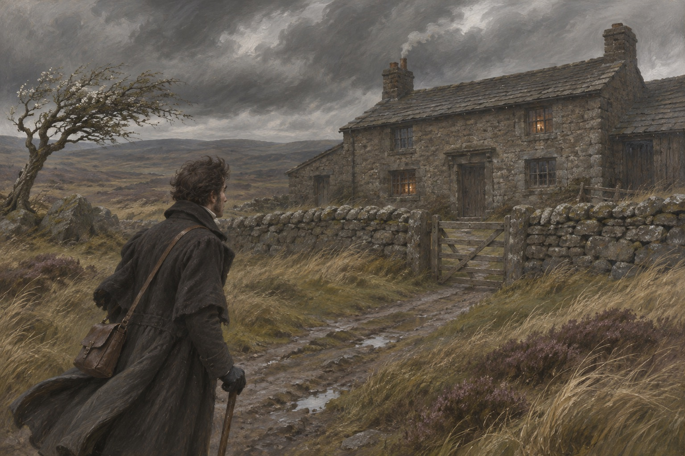

租客
洛克伍德租下画眉田庄，房东是个叫希斯克利夫的绅士，住在四英里外的呼啸山庄。他第一天去拜访，看见门口刻着「1500」和「哈里顿·恩肖」，院子里几条狗冲他呲牙。屋里坐着一个年轻女人，一句话不说；一个年轻男人，也不说话。他觉得这家人都不太正常。狗叫起来的时候，他把手缩回去。希斯克利夫说：它们不咬客人，只咬不请自来的。他说完，没有请他坐。狗叫起来的时候他把手缩回去。希斯克利夫说：它们不咬客人，只咬不请自来的。

窗上的名字
夜里下大雪，他只好留宿。仆人把他领进一间没人住的房间，床边的窗台上有人用指甲刻了三个名字：凯瑟琳·恩肖、希斯克利夫、凯瑟琳·林顿。他睡着以后梦见一只手敲窗玻璃，一个女人的声音说：让我进来。他抓住那只手，在碎玻璃上磨出了血。他醒来以后，把那只手按在窗台上，血滴在刻字上。他把窗子推开，外面的雪扑进来。他后来想，那不是梦。他醒来以后把那只手按在窗台上，血滴在刻字上。他后来想，那不是梦。
希斯克利夫的脸色
第二天早上，希斯克利夫听说他做了那个梦，脸色变了。他说：你要是再梦见她，就跟她走。洛克伍德下山回画眉，管家内莉·丁恩给他端来热酒，说：你想知道这家人是怎么回事吗。他说：想。她说：那我讲给你听。内莉说：你在我这儿听到的，别去问他。洛克斯伍德说：为什么。她说：因为他会承认，承认完就完了。内莉说：你在我这儿听到的，别去问他。洛克斯伍德说：为什么。她说：他会承认。
捡回来的孩子
老恩肖先生去利物浦办事，回来时带了一个又黑又脏的吉普赛男孩，说是捡的，取名希斯克利夫。他疼这个孩子胜过亲生儿女。辛德雷恨他，因为父亲把本该给儿子的马送给了这个外人。凯瑟琳跟他好，好得像一个人。辛德雷把马牵走的时候，希斯克利夫说：你拿吧，我还能再要一匹。老恩肖听见了，笑了一整天。
两个野孩子
老恩肖死后，辛德雷继承了山庄，把希斯克利夫降到马夫的位置，不让他念书，让他干活。凯瑟琳照旧跟他一起跑到荒原上，一跑就是一整天。他们说：我们就是这个样子，改不了。内莉说：你们早晚要改。凯瑟琳说：那我们就先过完今天。他们被抓回来的时候，一身泥，头发里全是草。内莉说：你们像两个野人。凯瑟琳说：我们就是。他们被抓回来的时候一身泥，头发里全是草。内莉说：你们像两个野人。
被狗咬
两个人半夜溜到画眉田庄看热闹，被狗追。凯瑟琳被咬伤，留在林顿家养了五个星期。她回来的时候穿着裙子，头发梳好了，说话也变了。希斯克利夫站在门口，看见她，说：你像个陌生人。她说：你也该洗洗自己了。她回来那天，希斯克利夫把手在裤子上擦了三遍才伸出去。她看着他的手，笑了一下，没有握。她回来那天，希斯克利夫把手在裤子上擦了三遍才伸出去。她没有握。
两个男人
埃德加·林顿来求婚。凯瑟琳答应了。她跟内莉说：嫁给他，我就能帮希斯克利夫。内莉说：你爱他吗。她说：我爱希斯克利夫。她说：可他太低了，嫁给他我就完了。她说这话的时候，希斯克利夫就站在门后。他听了一半，走了。内莉说：你说这话，要是被他听见呢。她说：他不会听见。门后的人站了一会儿，转身上楼了。内莉说：你说这话，要是被他听见呢。她说：他不会听见。门后的人上楼了。
出走
那天夜里下大雨，希斯克利夫走了。凯瑟琳在门口站了一夜，发烧，差点死。她好了以后，谁也不提这个名字。三年后她嫁给埃德加，婚礼办得很体面。她说：我现在是个体面人了。内莉说：你看起来不像高兴。她说：我高兴。她烧了三天，说胡话，一直叫一个名字。埃德加守在床边。她醒来的时候，看见他，说：你怎么在这儿。
回来了
一个秋天的晚上，内莉听见有人敲门。门外站着一个高个子男人，穿一身黑，脸上有风霜。他说：是我。她说：天啊。凯瑟琳从楼上跑下来，赤着脚，抓住他的手，说：你回来了。他说：我回来了。他这三年的钱，没有人知道是怎么来的。他说：我在外面赚了点钱。她说：多少。他说：够买下这栋房子。她笑了，笑着笑着就哭了。
赌局
希斯克利夫住进了呼啸山庄，跟辛德雷一起喝酒赌钱。辛德雷越输越多，最后把田产、房子、连儿子的将来都押上了。希斯克利夫每次都赢。内莉说：你这是要他的命。他说：他先要过我的。辛德雷把地契推过去的时候，手在抖。希斯克利夫说：你还有一次机会。他说：我不玩了。
伊莎贝拉
他追求埃德加的妹妹伊莎贝拉，说她爱他。伊莎贝拉跟他私奔，两人回来的时候，她脸上没有一点血色。他说：你不该爱我。她说：我知道。他说：那你为什么跟我走。她说：因为你说过一句话，我就信了。伊莎贝拉说：你说过你爱我。他说：我说过很多话。她说：那你哪句是真的。他说：你自己猜。
最后一夜
凯瑟琳病了，病得很重，孩子快生了。希斯克利夫半夜溜进她的房间，站在床边，说：你看看我。她说：我看了。他说：你为什么要嫁给他。她说：因为你走了。他说：我没有走，是你把我推走的。她抓住他的衣领，说：你别走。他说：我不走。她说：我这一辈子，只做错过一件事。他说：什么。她说：嫁给他。他说：那你现在怎么办。她说：我等着。
天亮
她生了一个女儿，取名凯瑟琳。她本人第二天早上死了，没有看见孩子。希斯克利夫在院子里站着，说：她死了，我却还活着。他说：我要她的鬼魂缠着我，缠一辈子。他说完，把头撞在树上，撞出了血。他把窗户打开，说：进来吧。风灌进来，烛火灭了。他站在黑里，说：你进来，我不怕你。他把窗户打开，说：进来吧。风灌进来，烛火灭了。他说：我不怕你。
伊莎贝拉走了
伊莎贝拉逃到伦敦，生了一个儿子，取名林顿。她再也不回北方。她写信给内莉，说：我这一辈子做错了一件事，就是相信一个男人说的话。她死的时候，儿子十二岁。希斯克利夫听说以后，说：把他接回来。伊莎贝拉在信里写：我这一辈子，只做过一件对的事，就是带着他离开那个地方。她死的时候，儿子在床边。伊莎贝拉在信里写：我做过一件对的事，就是带着他离开那个地方。
小哈里顿
辛德雷死了，喝酒喝死的。他儿子哈里顿五岁，被希斯克利夫留下，不让他读书，让他干活。内莉说：你为什么要这样对一个孩子。他说：因为他父亲这样对过我。内莉说：可他父亲已经死了。他说：那他就替他父亲还。哈里顿六岁就会喂马、劈柴，不会写自己的名字。内莉教他认字母，希斯克利夫看见了，说：别教他。哈里顿六岁就会喂马劈柴，不会写自己的名字。内莉教他认字母。
两个年轻人
凯茜（小凯瑟琳）十四岁，偷偷跑出画眉田庄，在荒原上遇见哈里顿。他们不知道彼此是谁。她说：你住哪儿。他说：那边。她说：那边不是我家吗。他说：不是。他们后来发现，他们是一个家族的两支。她说：你叫什么。他说：哈里顿。她说：哈里顿什么。他说：哈里顿·恩肖。她愣住了，说：那是我外公的姓。她说：你叫什么。他说：哈里顿·恩肖。她愣住了，说：那是我外公的姓。
逼婚
希斯克利夫把凯茜骗到山庄，关起来，逼她嫁给自己的儿子林顿。她说：我不爱他。他说：我不需要你爱他，我只需要你嫁给他。她说：为什么。他说：因为你父亲夺走了我的东西，我要拿回来。她说：这跟我有什么关系。他说：你是他的女儿。她说：你这样会遭报应的。他说：我已经遭过了。他说：我这一辈子，就等着看别人也遭一次。她说：你这样会遭报应的。他说：我已经遭过了。他说：我等着看别人也遭一次。
两个葬礼
埃德加病重的时候，凯茜被扣在呼啸山庄。她求希斯克利夫放她回去，他放了她。她赶回画眉田庄，父亲还有一口气，握住她的手，说了一句「你回来了」，就闭上了眼睛。几个月后，林顿也死了，瘦得像一张纸。希斯克利夫继承了画眉田庄，也拿到了凯茜的财产。他站在两座新坟中间，说：我赢了。他说完，脸上没有笑。
出处 · 第 28 章
书和花
凯茜留在山庄，教哈里顿读书。他笨，也倔，学了半年才学会写自己的名字。她给他念书，他给她种花。希斯克利夫看着他们，忽然说：这是报应。他说：我看见她（凯瑟琳）的脸在他身上。他说完，一个人走进雨里。他说：你教我认字，我就给你种一院子的花。她说：你先认字。他说：那你先种花。两个人都笑了。
最后一夜
希斯克利夫四天没吃东西，死在自己的房间里，窗户开着，雨把地板打湿了。村里人说，那天夜里看见两个人影在荒原上走，一个男人和一个女人。洛克伍德去看那三座坟：凯瑟琳的在中间，埃德加在一边，希斯克利夫在另一边。他说：我不知道还有谁能在这样的平静里睡着。洛克伍德在墓碑前站了一会儿，说：我本来想在这儿住一年。他后来提前走了，再也没有回来过。
出处 · 第 34 章